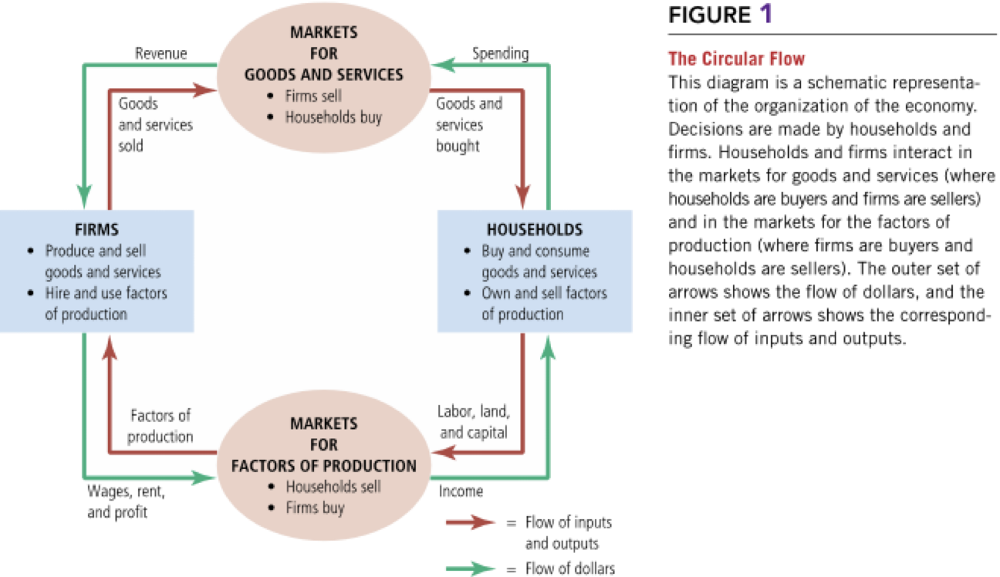

Chapter 2
Thinking Like an Economist
Intro
- What are economists’ two roles? How do they differ?
- What are models? How do economists use them?
- What are the elements of the Circular-Flow Diagram? What concepts does the diagram illustrate?
- How is the Production Possibilities Frontier related to opportunity cost? What other concepts does it illustrate?
- What is the difference between microeconomics and macroeconomics?
- What is the difference between positive and normative statements?
The Economist as a Scientist – 1
- Economists play two roles:
- Scientists: try to explain the world
- Policy advisers: try to improve it
- Scientists: try to explain the world
- As scientists, economists employ the scientific method:
- Dispassionate development and testing of theories
- Devise theories, collect data, and analyze data to verify or refute theories
- Dispassionate development and testing of theories
The Economist as a Scientist – 2
- Scientific method in economics:
- Observation → collect and analyze data
- Develop a theory based on observed data
- More observation → evaluate the theory
- Observation → collect and analyze data
- Cannot use lab experiments → rely on natural experiments offered by history
The Economist as a Scientist – 3
- Economists make assumptions
- Simplify the complex world
- Simplify the complex world
- Economists use models
- Built with assumptions
- Omit many details → focus on essentials
- All models are subject to revision
- Built with assumptions
The Circular-Flow Diagram
- Visual model of the economy
- Shows how dollars flow through markets among households and firms
- Two decision makers:
- Households
- Firms
- Households
- Interact in two markets:
- Market for goods & services
- Market for factors of production
- Market for goods & services
The Circular-Flow Diagram

The Production Possibilities Frontier (PPF)
- Graph showing combinations of outputs an economy can produce
- Given:
- Available factors of production
- Available technology
- Available factors of production
The PPF - linear
The PPF - bowed outwards (increasing OC)
Areas of the PPF
- Efficient: points on the PPF
- Inefficient: points inside the PPF
- Not feasible: points outside the PPF
Microeconomics vs. Macroeconomics
- Microeconomics: decisions of households & firms; interaction in markets
- Macroeconomics: economy-wide phenomena (inflation, unemployment, growth)
The Economist as Policy Adviser
- Economists as scientists: explain events (positive statements)
- Economists as advisers: recommend policies (normative statements)
Positive vs. Normative
- Positive statements: descriptive, testable
- “Minimum-wage laws cause unemployment.”
- “Minimum-wage laws cause unemployment.”
- Normative statements: prescriptive, value-based
- “The government should raise the minimum wage.”
Why Economists Disagree
- Conflicting theories
- Different value judgments
- Yet, many propositions most economists agree on
Propositions Economists Agree On
- Rent ceilings reduce housing availability (93%)
- Tariffs & quotas reduce welfare (93%)
- US should not restrict outsourcing (90%)
- Eliminate farm subsidies (85%)
- Eliminate sports franchise subsidies (85%)
- Cash > in-kind transfers (84%)
- Large deficits harm economy (83%)
- Don’t ban GM crops (82%)
- Minimum wage increases unemployment (79%)
- Reduce ethanol subsidies (78%)
Summary
- Economists as scientists → assumptions & models (e.g., PPF, circular flow)
- Micro = individual decision-making; Macro = whole economy
- Positive = descriptive, Normative = prescriptive
- Economists may disagree (judgments, values)
- Policymakers may ignore advice due to politics